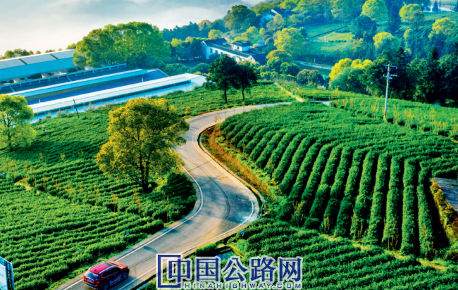
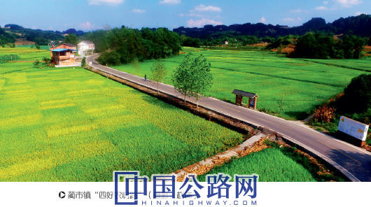
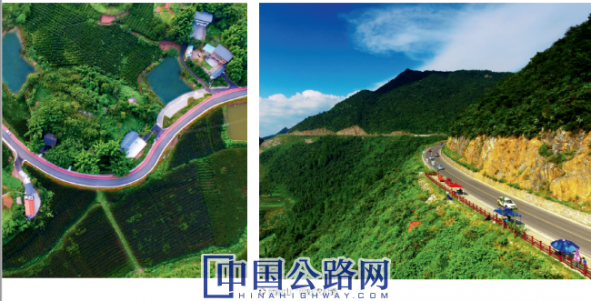
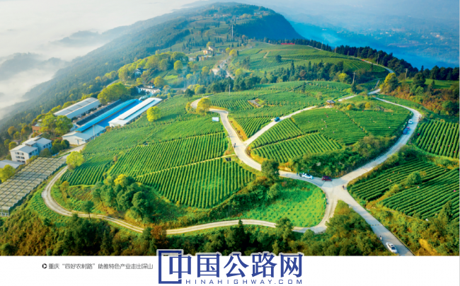
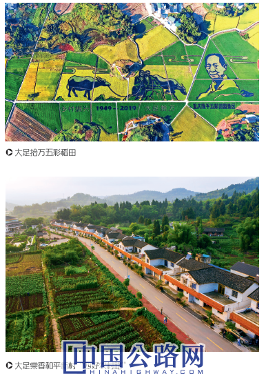
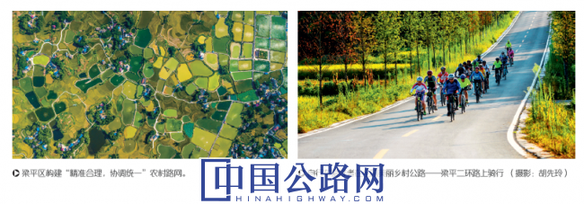

微官网
微官网
2020-10-10 《中国公路》 作者：重庆市公路事务中心
近年来，重庆市加快推进农村公路交通基础设施建设，截至2 0 2 0年8月，重庆市“四好农村路”总里程达到15.59万公里，路网密度达每百平方公里189.2公里，居西部第一。全市村民小组通达、通畅率分别达到9 9.4%、9 0.2%，其中，18个深度贫困乡镇完成投资64亿元，占投资总量的9 2%，已有15个乡镇完成1条对外交通项目，16个乡镇实现具备条件的村民小组通达通畅率10 0%。桥梁、安防工程及窄路加宽总体形象进度分别达到86%、97.9%和99%，从而全面改善农村群众出行条件，大幅增强广大农村经济社会发展能力，为全面建成小康社会，加速实现交通强国及成渝地区双城经济圈战略奠定坚实基础。

坚持深学笃用
树立高质量发展战略思维
“我们始终坚持把习近平总书记关于‘四好农村路’及脱贫攻坚重要指示精神，中央和重庆市委、市政府关于‘四好农村路’及脱贫攻坚决策部署作为理论学习的首要内容。”重庆市公路事务中心主要领导表示，通过研究制定学习计划，深入学习思考，开展交流研讨，实施宣讲辅导，撰写调研文章，进一步增强领导干部为决战脱贫攻坚、决胜全面建成小康提供坚强保障的责任感、使命感。重庆市公路事务中心每年组织专题政策文件精神学习30余次，撰写心得体会20余篇，组织专题讲座10余次。
重庆市公路事务中心坚持把学习和调查研究结合起来，组织广大干部职工到农村公路一线开展学习调研，把提高自身思想水平、理论修养和工作能力作为专题学习的着力点，着力增强宗旨观念和服务意识，对公路高质量发展等方面建言献策，充分利用“学习强国”学习平台，建立“四好农村路”专题学习微信群，做到学习与工作两不误，不断增强学习主动性、自觉性和实效性。
立足顶层设计
制订高质量发展方案规划
重庆市公路事务中心成立“四好农村路”建设督导组，领导责任到人，分片区、分区县检查督导，及时发现问题、解决问题、指导工作，并按月通报质量进度排名，确保交通脱贫项目按时完工，形成齐抓共管、上下联动的良好格局，并扎实做好“四好农村路”项目调研核查，全面完善项目库，加快项目前期工作，尽早落实建设资金、建设用地及配套政策等资源要件。
目前，重庆市农村公路建设主要任务集中在有扶贫任务的33个区县，特别是武陵山区和秦巴山区等边远区县，这些地区自然条件恶劣，容易建设的农村公路已基本建设完成，剩下的均是难度大的“硬骨头”，重庆市公路事务中心将这些地区作为脱贫的重点区域，制定了实施方案，并与贫困区县政府签订了脱贫攻坚协议，明确各区县的目标任务，以农村人口、资源、产业、旅游等农村社会经济发展要素为基础，合理确定建设规模，重点解决18个深度贫困乡镇交通脱贫，全面保障“四好农村路”整体推进。

打造品质工程
建设高质量发展美丽公路
为推进“四好农村路”规范管理，重庆市公路事务中心制定实施通组公路“1+5”管理文件，建成投用“四好农村路”信息监管平台，实现对交通脱贫项目全方位、精细化管理。加强农村公路质量管理，尤其是在区县加大检查力度强化事前干预，农村公路项目在硬化前对路基薄弱部分调平补强并进行中间环节交工验收，有效保证了路面宽度及使用质量。目前，重庆市“四好农村路”项目质量总体抽检合格率达到90％以上，实现质量进度同步完成。

目前，万盛、武隆、奉节、永川、大足、石柱6个区县成功创建“四好农村路”全国示范区县，涪陵、垫江、云阳、沙坪坝等14个区县创建为市级示范区县，重庆市公路事务中心总结推广先进的建设管理经验，提高全市“四好农村路”发展整体水平。同时，以“美丽乡村路”建设为切入点，推动农村公路与地域特色、地理景观、乡村产业等因素相结合，与区域文化深度融合，打造“一路一风景、一村一幅画、一县一特色”的路域环境，建设一批极具特色观景点等公路服务设施，全面提升农村群众出行品质。
注重群策群力
破解高质量发展资金瓶颈
近年来，交通运输部给予重庆市“四好农村路”大量资金补助支持，“十三五”期间，累计补助超过207亿元。重庆市人民政府印发《重庆市基础设施建设提升战略行动计划（交通行动计划）工作方案》，将“四好农村路”建设放在第一位，“十三五”期间，市级投入180亿元用于农村公路建设。
重庆市公路事务中心积极指导贫困区县将脱贫、移民、林业、烟草等专项资金“打捆”使用，每年超过10亿元重点投向农村公路建设项目，并鼓励用好用活国家支持政策，帮助区县争取国家开发银行和农发行优惠贷款用于公路建设；各区县广泛动员群众投工投劳，动员企业家、社会成功人士、热心人员参与家乡的公路建设中，社会捐助资金累计达到近10亿元。
健全管养机制
全面保障高质量发展建设成果
2020年，按照“四好农村路”高质量发展要求，重庆市公路事务中心争取市政府出台了《重庆市深化农村公路管理养护体制改革实施方案》，建立完善农村公路管理的长效机制，全面保障建设成果。重庆市建立了以公路技术状况评定结果为重要指标的评价体系和以“以奖代补”为主的奖惩机制，协助市政府对区县政府开展绩效管理，并将考核结果与相关投资挂钩；市、区县确保财政支出责任落实到位，将相关税收返还用于农村公路养护。从2021年起，市、区县用于农村公路日常养护的总额不低于以下标准：县道每年每公里10000元，乡道每年每公里5000元，村道每年每公里3000元，保证“四好农村路”可持续发展。

同时，鼓励通过签订长期养护合同、招投标约定等方式，引导专业养护企业加大投入，提高养护机械化水平，分类有序推进农村公路养护市场化改革，逐步建立政府与市场合理分工的养护生产组织模式，节约集约利用资源，大力开展“美丽农村路”建设，推进农村公路与特色产业、乡村旅游等多元融合，推动运用新技术、新手段赋能农村公路管理养护工作。
突出成果惠民
发展助推乡村振兴战略
目前，群众出行实现从“走得了”到“走得好”。每年新增铺装路面公路1.5万公里，“四好农村路”优良中等路率达到8 0 %以上，全市18个深度贫困乡镇通达通畅率分别达到10 0%，其中，石柱县中益乡等15个乡镇村民小组通达通畅率实现10 0%，全市农村居民到达县城出行时间平均缩短约2小时、出行距离扩大3倍、出行频率提高5倍以上，农村公路通行效率全面增强。
农村路网从“瓶颈制约”到“内畅外联”。重庆市平均每年建成通达通畅工程超过2万公里，重点打通贫困地区断头路和瓶颈路，加快景区产业地区公路交通整体覆盖，全市区县与周边省际之间，区县之间、建制（乡）之间和行政村之间路网结构显著优化，农村交通面貌得到根本改善。
武隆区通过农村公路把全区100处乡村旅游景点连接起来，形成“串珠式”发展，新开发永川黄瓜山休闲度假区、云阳岐山草场、彭水摩围山、酉阳县两罾乡金丝楠木等一批旅游景区，加快形成“快旅慢游”交通网络体系。
助推经济社会从“贫困落后”到“ 致富小康”的转变。按照“绿水青山就是金山银山”发展理念，通过“四好农村路”高质量发展，助推贫困地区特色产业的形成，广泛带动贫困地区农民就业。许多外出打工者充分把握当前发展契机，利用当地交通优势，返乡投资农业特色产业、乡村旅游业、农产品加工等行业，因地制宜发展中药材、脆李、脆桃、辣椒、有机稻和蜂蜜产业，大力发展民宿旅游等产业。目前，全市农村路网沿线形成和发展农业特色产业产值突破10 0亿元，有效解决农村富余劳动力就业增收，为加快推进乡村振兴战略奠定坚实基础。
大足：“交通+”模式提升可持续发展质效

近年来，大足区按照“立足建、着力管、注重护、突破运”的工作思路，加速路网互联互通，落实管养责任，优化农客线网布局，推动“四好农村路”向高质量发展。截至目前，大足区交通三年行动计划通畅工程计划建设1600公里，目前已完工1438公里，完工率达89.6%，2020年底将全面完工，全区村民小组公路通畅率达到100%。
分类建设突出带动效益
“交通+旅游”。大足区深入挖掘石刻、宗教、五金、民俗等文化资源，结合“世界遗产、创意文化、美丽乡村”三大品牌，新改扩建重点旅游公路150公里，慢行系统改造工程48公里，旅游风景道83公里、骑行专线60公里、旅游标识120块，建成旅游生态停车场8个，36个公交站杆改为站台。
“交通+扶贫”。2019年至2020年，大足区投入6829万元建成扶贫路49条、97.677公里。全区依托道路布局特色养殖、樱桃、柑橘、花椒等产业基地46处，惠及贫困人口3707人，带动就业超2500余人，市级脱贫村集体年收入达到20万元以上。
“交通+产业”。围绕农业产业园发展规划，大足区新改建产业路134.9公里，带动新增农业产业园35处、生态园21处，推动建成龙水雷笋基地、拾万五彩稻田、雍溪花卉基地、中敖慧欣牡丹、高升芳香产业等产业基地建设80万亩。
主动探索创新破解难题
优化建设审批流程。大足区推行“渝快办”网上平台审批工作，将农村公路建设审批纳入营商环境审批大厅，推出“一张表单”，优化办事流程、办结时限压缩72%、网上办结率达到100%，实现全流程办理，从企业到每个政务服务机构“最多跑一次”转变为“一件事最多跑一次”。
鼓励国企参与。国企以成本价对扶贫、保障群众刚需出行道路路面实行兜底建设，并就近建立搅拌站，每公里总体节约成本10万元，参建总里程达71.61公里。
实行“四好农村路”碎石限价限量供应。公路建设管理部门协调碎石厂定时、定量、定价保障公路建设项目，每吨出厂价（不含税收）为50元，以产能的25%至30%落实到生产企业，降低原材料成本，供应总量已达21万余吨。
建立管养新机制新模式
大足区对重要县乡道按照100万元以上的养护工程市场化运作的模式，在区招标中心挂牌招标，金额较小的养护工程由区公路养护中心组织实施。
此外，大足区还成立了国有专业化养护公司，主要承接县道、乡道路面修补、桥涵构造物修复等，小修技术性较强的养护工作和承担部分农村公路沥青混凝土面层建设任务。
“民建、民养、民管、民享”理念在大足区生根发芽，将村道补助标准提高至每公里2000元，倡导、鼓励群众以投工投劳、捐赠材料、轮流养护等方式组织村道养护，开发养护公益性岗位，吸纳贫困群众30余人，人均年增收7000元左右。
梁平：特色路网打通农村发展“任督二脉”

目前，梁平区已实现国省道覆盖乡镇10 0%，乡镇通客率100%，行政村通客率100%，并于2019年底实现村民小组通达率100%、通畅率100%。
——重规划、抓建设、精准扶贫，建设稳步推
进，路网结构更合理
全局视野，统筹农村路网规划。梁平区坚持路网规划编制精准合理、规划建设协调统一，交通建设三年行动“四好农村路”计划实施2433公里，其中通达里程814公里、通畅工程1619公里。持续发力，强化农村路网建设。坚持抓重点、补短板、强弱项，梁平区加快农村交通基础设施建设，交通建设三年行动计划以来，全区“四好农村路”总体完工率已达90%以上。精准扶贫，重点倾斜贫困村组。梁平区充分考虑脱贫攻坚需求，优先安排10个市级贫困村、6个区级相对贫困村、18个贫困组交通扶贫项目共172公里，助力贫困人口综合保障体系全面建立。
——带旅游、服文产、助力振兴，交旅文产融
合，乡村振兴更得力
着力建成特色路网，撬动旅游经济发展。梁平区已形成9条、84公里景区道路、建成百里竹海34公里旅游景观道和91公里长的“二环路”等特色公路。有效带动乡村旅游发展迅猛，连续三年高增长，2019年乡村旅游总收入达13.74亿元，新策划推出乡村旅游路线6条、培育特色旅游商品品牌3个。疏通农村“毛细血管”，服务特色产业发展。梁平区高效助力农业生产，确保水稻种植面积达到60万亩，特色粮油面积提高到100万亩以上。有力推动梁平柚种植、微流水养鱼养殖等特色产业。持续叫响“中国竹乡”品牌，把“晒秋节”打造成全市乡村振兴、现代农业的品牌。服务乡村振兴大局，全力助推脱贫攻坚。2017年、2018年、2019年，梁平区在全市脱贫攻坚成效考核中连续三年被评为“好”，截至2019年底，全区贫困发生率、返贫率分别为0.003%、0%。
——抓管理、强养护、提升服务，效益持续显
现，保障民生更有力
持续增强农村公路创新管理能力。梁平区严格路政执法，推行区级路政统一执法、镇乡协助执法，强化对乡村道路的安全隐患排查、灾害抢险等工作。落实常态化路域整治，持续开展联合巡查、联合路政监督指导。持续增强农村公路科学养护能力。梁平区分类推进实施农村公路升级改造（大中修工程），累计投资超3000余万元。组织实施农村公路病害治理工程21处，农村公路安保设施500余公里，危桥改造36座，县乡村道安全隐患整治率达100%。持续提升农村公路品质服务能力。梁平区农村客运通车里程达863公里，开行农村客运班线156条、城市公交线路12条，农村公交线路5条，修建并维护完好农村客运招呼站点528个。开通百里竹海、双桂堂旅游公交专线，开行“梁平柚海”“滑石古寨”旅游客运线路，实现高效“城景通”。
石柱：建设“四好农村路”筑就“金山银山”
巴蜀大地，山高路险。李白吟诗：“蜀道之难，难于上青天！”诗人白居易任忠州刺史时，也面对长江再次发出感叹：“南山多苦道！”
当年白居易眼前的“南山”，正是重庆市石柱土家族自治县。
贯穿全境的七曜山和方斗山既庇护着世外桃源般的土家山寨，也因没有公路阻隔着土家人与外界的交往。在石柱县的千峰万壑间，在云山雾障的大风堡原始森林脚下，有一方积贫积弱的土地。这里，就是重庆18个深度贫困乡镇之一的中益乡。大山大水的阻隔，交通物流的闭塞，让中益乡的脱贫之路走得缓慢而艰辛。
“十三五”以来，石柱县对标“四好农村路”的要求，着力构建“内畅外联、互联互通、功能完善”的“四好农村路”交通网络，全力推进“建管护运”协调发展，铺筑起一条条串起美丽乡村的致富路、民心路、幸福路。
如今，石柱县已有“四好农村路”4927公里，实现乡（镇）、行政村通畅率100%，撤并村通达率100%，等级公路养护列养率100%。全县现有客运站30个，行政村招呼站214个，开行农村客运班线121条，运营车辆333辆，乡（镇）、行政村通客运率100%，城乡客运一体化发展水平达到AAAA级。
沐浴着温暖的春风，大力推进交通建设的号角“吹醒”了世代居住在大风堡脚下的中益乡华溪村的广大干部群众。
华溪村位于中益乡中部，东邻本乡盐井村，南接本乡光明村，西邻本乡龙河村，北接黄水镇大风堡村，距县城40公里，为中益乡政府驻地，全村辖4个村民小组，户籍人口542户1466人。
2017年8月以前，石柱县交通局通过“向上争资，财政筹集，地方配套，群众参与”的建设思路，全力推进华溪村“四好农村路”建设。目前，全村共有3.5米宽硬化公路11.8公里，改扩建公路15.2公里，其中，县级通乡过境6.5米宽沥青公路1.5公里、8.5米宽沥青公路1.5公里。通组5.5米沥青公路6.5公里、5.5米宽硬化公路5.7公里，全村4个村民小组均通硬化公路。
脱贫攻坚，交通先行，“四好农村路”建设完善，助力了华溪村经济社会的蓬勃发展，给当地老百姓带来了巨大福祉，有力推动了脱贫攻坚。全村发展脆桃269亩、脆李86亩、吴茱萸210亩、木瓜420亩，林下套种西瓜150亩、赤芍70亩、红花荞120亩、黄精220亩；引进发展莼菜35亩、莲藕40亩，养殖中蜂310群，年产生经济价值480余万元。同时，全村524栋农房及水、电、通讯等基础设施全面改善，贫困人口85户302人顺利脱贫77户283人，贫困发生率由2014年的19.48%降至1.61%。